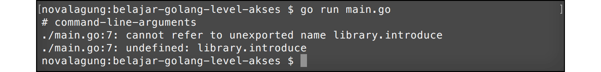
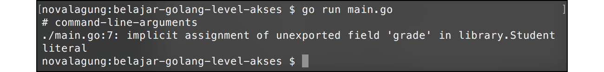

A.26. Properti Public dan Private (Exported vs Unexported)
Chapter ini membahas tentang property modifier public dan private yang ada di pemrograman Go. Peran dari property modifier adalah sebagai penentu kapan suatu struct, fungsi, atau method bisa diakses dari package lain dan kapan tidak.
Di Go sebenarnya tidak ada istilah public modifier dan private modifier. Yang ada adalah exported (yang kalau di bahasa lain ekuivalen dengan public modifier), dan unexported untuk private modifier.
A.26.1. Intro
Intro ini ditulis agar pembaca tau ekspektasi chapter ini sebenarnya apa.
Pembahasan kali ini memiliki beberapa perbedaan dibanding chapter lainnya. Jika pembaca mengikuti pembelajaran di chapter ini secara berurutan, dan benar-benar membaca penjelasan serta pembahasan yang sudah tertulis, maka nantinya pasti menemui 3 buah error.
Di setiap error tersebut, sebenarnya sudah terlampir informasi berikut:
- Screenshot error
- Penjelasan penyebab terjadinya error
- Cara resolve atau mengatasi error
Penulis menerima cukup banyak email dari pembaca mengenai beberapa error di chapter ini. Kesimpulan penulis:
Pembaca bingung karena mendapati error, dan tidak tau apa yang harus dilakukan. Padahal sudah ada keterangan yang cukup jelas bahwa error tersebut pasti muncul, dan sudah disediakan juga penjelasan beserta cara mengatasinya. Ini kemungkinan besar disebabkan karena pembaca hanya copy-paste source code dari chapter ini, tanpa benar-benar membaca penjelasan yang padahal sudah ditulis cukup detail.
Saya sangat anjurkan untuk tidak hanya copas source code, usahakan dibaca! dipelajari! dan dipahami! No hard feeling ya 👌😁
A.26.2. Exported Package dan Unexported Package
Pengembangan aplikasi dalam real development pasti membutuhkan banyak sekali file program. Tidak mungkin dalam satu buah project semua source code di tulis di hanya 1 package main saja, umumnya akan dipisah ke beberapa package berbeda yang masing-masing punya tugas sendiri yang berbeda satu sama lain.
Project folder selain berisikan file-file .go juga bisa berisikan sub-folder lainnya. Di Go, setiap folder atau sub-folder adalah satu package, file-file yang ada di dalam sebuah folder package-nya harus sama. Dan package pada file-file tersebut harus berbeda dengan package pada file-file lainnya yang berada pada folder berbeda.
Sederhananya, 1 folder adalah 1 package.
Dalam sebuah package, biasanya kita menulis sangat banyak komponen, bisa berupa fungsi, struct, variabel, atau lainnya. Komponen-komponen tersebut bisa secara leluasa dipergunakan di kode yang masih berada di dalam package yang sama. Contohnya seperti program yang telah kita praktekan pada chapter sebelum-sebelumnya, dalam package main ada banyak yang di-define: fungsi, variabel, closure, struct, dan lainnya; semuanya bisa langsung dimanfaatkan.
Jika dalam satu program terdapat lebih dari 1 package, atau ada package lain selain main, maka komponen dalam package lain tersebut tidak bisa diakses secara bebas dari file yang package-nya main, perlu dilihat dulu level akses yang sudah ditentukan apa.
Go mengenal 2 jenis level akses atau hak akses:
- Hak akses Exported atau public. Menandakan bahwa komponen boleh untuk diakses dari package lain
- Hak akses Unexported atau private. Berarti komponen hanya bisa diakses dari file yang package-nya sama, bisa dalam satu file yang sama atau di file berbeda yang masih 1 folder yang package-nya pastinya sama.
Cara menentukan level akses atau modifier di Go sangat mudah, yaitu dengan mengacu ke character case huruf pertama nama fungsi, struct, variabel, atau lainnya. Ketika namanya diawali dengan huruf kapital maka level aksesnya adalah exported (atau public). Dan sebaliknya, jika diawali huruf kecil, berarti unexported (atau private).
A.26.3. Penggunaan Package, Import, Dan Hak Akses Exported dan Unexported
Agar lebih mudah dipahami, maka langsung saja kita praktekan.
Pertama buat folder proyek baru bernama belajar-golang-level-akses, gunakan nama folder tersebut sebagai nama project. Kemudian buat file baru bernama main.go di dalamnya, lalu tentukan nama package file tersebut sebagai main.
Kemudian, buat sub-folder baru bernama library di dalam folder belajar-golang-level-akses. Di dalam folder library, buat file baru library.go, set nama package-nya library.

Buka file library.go lalu isi dengan kode berikut.
package library
import "fmt"
func SayHello() {
fmt.Println("hello")
}
func introduce(name string) {
fmt.Println("nama saya", name)
}
File library.go yang telah dibuat ditentukan nama package-nya adalah library (sesuai dengan nama folder), isinya dua buah fungsi SayHello() dan introduce().
- Fungsi
SayHello(), level aksesnya adalah publik, ditandai dengan nama fungsi diawali huruf besar. - Fungsi
introduce()dengan level akses private, ditandai oleh huruf kecil di awal nama fungsi.
Selanjutnya kita siapkan beberapa kode tambahan untuk keperluan testing apakah memang fungsi yang ber-modifier private dalam package library tidak bisa diakses dari package lain.
Buka file main.go, lalu tulis kode berikut.
package main
import "belajar-golang-level-akses/library"
func main() {
library.SayHello()
library.introduce("ethan")
}
Bisa dilihat bahwa package library yang telah dibuat tadi, di-import ke dalam package main.
Di awal telah ditentukan bahwa nama project (yang juga merupakan nama folder) adalah belajar-golang-level-akses, maka untuk import package lain yang merupakan subfolder, pada syntax import harus dituliskan lengkap, contoh: belajar-golang-level-akses/library.
Penanda root folder adalah tempat di mana file
go.modberada
Kembali ke pembahasan kode, silakan perhatikan kode berikut:
library.SayHello()
library.introduce("ethan")
Cara pemanggilan fungsi yang berada dalam package lain adalah dengan menuliskan nama package target diikut dengan nama fungsi menggunakan dot notation atau tanda titik, seperti library.SayHello() atau library.introduce("ethan").
OK, sekarang coba jalankan kode yang sudah disiapkan di atas, hasilnya error.

Error di atas disebabkan oleh fungsi introduce() yang berada dalam package library memiliki level akses unexported (atau private), maka fungsi ini tidak bisa diakses dari package lain (pada kasus ini package main). Solusi agar bisa diakses adalah dengan mengubah level aksesnya ke exported (atau public), atau bisa dengan mengubah cara pemanggilannya.
Ok, sekarang kita akan coba cara ke-2, yaitu mengubah cara pemanggilannya. Tambahkan parameter name pada fungsi SayHello(), lalu masih di dalam fungsi tersebut panggil fungsi introduce() dan gunakan parameter name-nya.
func SayHello(name string) {
fmt.Println("hello")
introduce(name)
}
Di fungsi main(), cukup panggil fungsi library.SayHello() saja. Isi parameternya dengan nilai string apapun, misalnya "ethan".
func main() {
library.SayHello("ethan")
}
Coba jalankan lagi.

A.26.4. Penggunaan Hak Akses Exported dan Unexported pada Struct dan Propertinya
Level akses exported (atau public) dan unexported (atau private) juga bisa diterapkan di fungsi, struct, method, maupun property variabel. Cara penggunaannya sama seperti pada pembahasan sebelumnya, yaitu dengan menentukan character case huruf pertama nama komponen, apakah huruf besar atau kecil.
Ok, lanjut ke praktek berikutnya. Hapus isi file library.go, lalu buat struct baru dengan nama student di dalamnya.
package library
type student struct {
Name string
grade int
}
Buat contoh sederhana penerapan struct di atas pada file main.go.
package main
import "belajar-golang-level-akses/library"
import "fmt"
func main() {
var s1 = library.student{"ethan", 21}
fmt.Println("name ", s1.Name)
fmt.Println("grade", s1.grade)
}
Setelah itu jalankan program.
Error muncul lagi, kali ini penyebabnya adalah karena struct student level aksesnya adalah unexported. Ubah ke bentuk exported dengan cara mengubah huruf awalnya menjadi huruf besar, kemudian jalankan ulang.
// file library/library.go
type Student struct {
Name string
grade int
}
// file main.go
var s1 = library.Student{"ethan", 21}
fmt.Println("name ", s1.Name)
fmt.Println("grade", s1.grade)
Output program:

Error masih tetap muncul, tapi kali ini berbeda. Error yang baru ini disebabkan karena salah satu properti dari struct Student adalah unexported. Properti yg dimaksud adalah grade. Solusinya ubah ke bentuk exported, lalu jalankan ulang program.
// pada library/library.go
type Student struct {
Name string
Grade int
}
// pada main.go
var s1 = library.Student{"ethan", 21}
fmt.Println("name ", s1.Name)
fmt.Println("grade", s1.Grade)
Dari contoh program di atas, bisa disimpulkan bahwa untuk menggunakan struct yang berada di package lain, selain nama struct-nya harus berbentuk exported, properti yang diakses juga harus exported juga.
A.26.5. Import Dengan Prefix Tanda Titik
Seperti yang kita tahu, untuk mengakses fungsi/struct/variabel yg berada di package lain, nama package nya perlu ditulis, contohnya seperti pada penggunaan library.Student dan fmt.Println().
Di Go, komponen yang berada di package lain yang di-import bisa dijadikan se-level dengan komponen package peng-import, caranya dengan menambahkan tanda titik (.) setelah penulisan keyword import. Maksud dari se-level di sini adalah, semua property di package lain yg di-import bisa diakses tanpa perlu menuliskan nama package, seolah-olah property tersebut berada di file yang sama. Contoh:
import (
. "belajar-golang-level-akses/library"
"fmt"
)
func main() {
var s1 = Student{"ethan", 21}
fmt.Println("name ", s1.Name)
fmt.Println("grade", s1.Grade)
}
Pada kode di atas package library di-import menggunakan tanda titik. Dengan itu, pemanggilan struct Student tidak perlu dengan menuliskan nama package nya.
PERINGATAN!
Penggunaan tanda titik pada saat import package bisa menyebabkan kode menjadi ambigu, karena alasan tersebut teknik import ini kurang direkomendasikan.
A.26.6. Pemanfaatan Alias Saat Import Package
Fungsi yang berada di package lain bisa diakses dengan cara menuliskan nama-package diikuti nama fungsi-nya, contohnya seperti fmt.Println(). Package yang sudah di-import tersebut bisa diubah nama pemanggilannya dengan menerapkan teknik alias yang dituliskan saat import. Contohnya bisa dilihat pada kode berikut.
import (
f "fmt"
)
func main() {
f.Println("Hello World!")
}
Pada kode di-atas, package fmt di tentukan aliasnya adalah f, untuk mengakses Println() cukup dengan f.Println().
A.26.7. Mengakses Property Dalam File Yang Package-nya Sama
Jika property yang ingin di akses masih dalam satu package tapi file-nya berbeda, cara mengaksesnya bisa langsung dengan memanggil namanya seperti biasa. Hanya saja saat eksekusi, file-file lain yang yang nama package-nya sama tersebut harus ikut disertakan dalam command go run.
Langsung saja kita praktekan, buat file baru dalam folder belajar-golang-level-akses dengan nama partial.go.

Tulis kode berikut pada file partial.go. File tersebut kita tentukan nama package-nya adalah main (sama dengan nama package file main.go).
package main
import "fmt"
func sayHello(name string) {
fmt.Println("halo", name)
}
Hapus semua isi file main.go, ganti dengan kode berikut.
package main
func main() {
sayHello("ethan")
}
Sekarang terdapat 2 file berbeda (main.go dan partial.go) dengan package adalah sama, main. Pada saat go build atau go run, semua file dengan nama package main harus dituliskan sebagai argumen command.
go run main.go partial.go
Fungsi sayHello pada file partial.go bisa dikenali meski level aksesnya adalah unexported. Hal ini karena kedua file tersebut (main.go dan partial.go) memiliki nama package yang sama.
Alternatif yang lebih praktis untuk menjalankan program bisa dengan perintah
go run *.go, dengan cara ini maka tidak perlu menuliskan nama file-nya satu per satu.

A.26.8. Penjelasan Tambahan
◉ Fungsi init()
Selain fungsi main(), terdapat juga fungsi spesial yaitu init(). Fungsi ini otomatis dipanggil saat pertama kali program dijalankan. Jika fungsi ini ditulis di package-package lain yang di-import di main, maka semua fungsi init() tersebut dipanggil lebih dulu sebelum fungsi main().
Agar lebih jelas mari praktekan. Buka file library.go, hapus isinya lalu isi dengan kode berikut.
package library
import "fmt"
var Student = struct {
Name string
Grade int
}{}
func init() {
Student.Name = "John Wick"
Student.Grade = 2
fmt.Println("--> library/library.go imported")
}
Pada package tersebut, variabel Student dibuat dengan isi anonymous struct. Dalam fungsi init, nilai Name dan Grade variabel di-set.
Selanjutnya buka file main.go, isi dengan kode berikut.
package main
import "belajar-golang-level-akses/library"
import "fmt"
func main() {
fmt.Printf("Name : %s\n", library.Student.Name)
fmt.Printf("Grade : %d\n", library.Student.Grade)
}
Package library di-import, dan variabel Student dikonsumsi pada fungsi main(). Sewaktu package di-import, fungsi init() yang berada di dalamnya langsung dieksekusi.
Di dalam fungsi init(), property variabel objek Student diisi dan sebuah pesan ditampilkan ke console.

Di Go, setiap package masing-masing boleh memiliki fungsi init(). Fungsi tersebut hanya akan dieksekusi ketika package di-import dengan urutan eksekusinya adalah sesuai dengan package mana yg di-import terlebih dahulu. Dan kesemua fungsi init() dipanggil sebelum fungsi main().